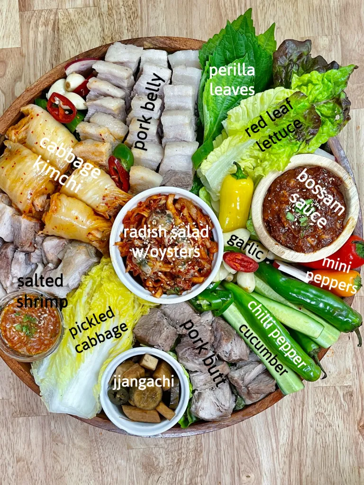

Bossam
Recipe from Chef Chris Cho
About Bossam
Bossam, also known as Korean boiled pork belly, is a staple Korean food that is served with side dishes.
Origins: Bossam originates from the Jolla-Do area of Korea and has origins in more noble classes of Korean history and is one a few dishes that's culinary origins are believed to stretch back to the Joseon era. This dish does take about an hour to prepare, but it is certainly worth the time.
Ingredients (prep time 10 minutes)
The main ingredients needed for Bossam are pork belly (3-inch wide cut of about 2.5 pounds), fermented soybean paste (1.5 tablespoons), and coffee powder (1 teaspoon).
Other ingredients include:
- 1 teaspoon of salt
- enough water or beer to fully cover pork belly
- 1 inch ginger sliced
- 1 teaspoon of pepper
- 1 onion
- 4 large scallions
- 2 bay leaves
- 6 garlic cloves

How to make (takes 1 hour)
Now that all the ingredients are gathered, it is simple to make. This makes enough for 4 people.

Serve with side dishes and greens to cut down on the fat and enjoy!

Recipe Websites
Korean Bapsang is the first website that I looked at to examine the cooking process of bossam. I enjoyed how this website had clear instructions and the three step process to enjoy bossam made it easy to understand. One thing I did not like about the wbesite was that there was too much going on for a recipe page.
Maangchi is a great website that provides thorough instructions about how to make bossam, but I feel like sometimes that might be a larger con than a pro. The process of boiling pork belly with seasonings is simple and does not need pages of instructions.
The New York Times provides a modern twist to the generational dish by adding more creative twists like sous vide and oven cooking. Though modern twists are interesting, the traditional dish should be preserved for those who want to try the auntenthic version.
Created by Joseph Lim